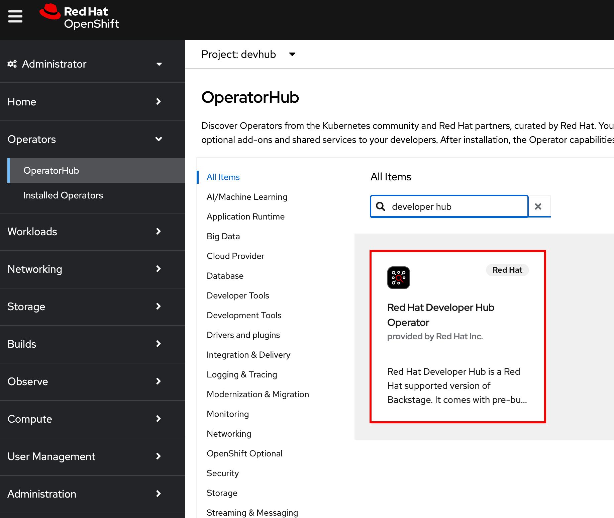
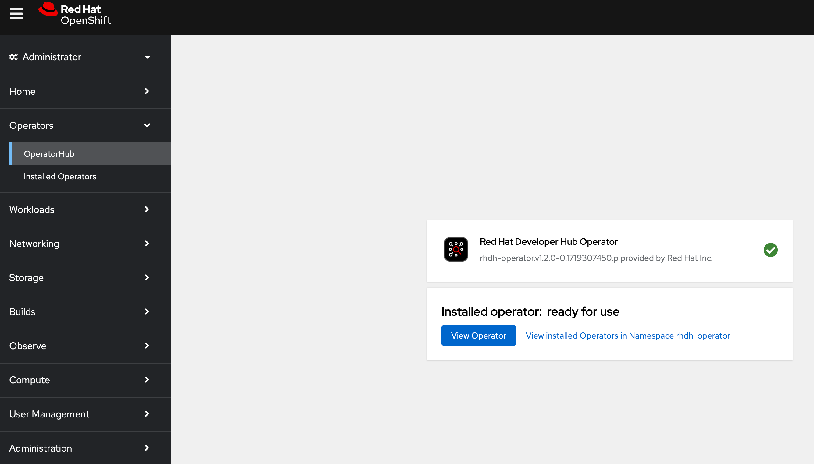
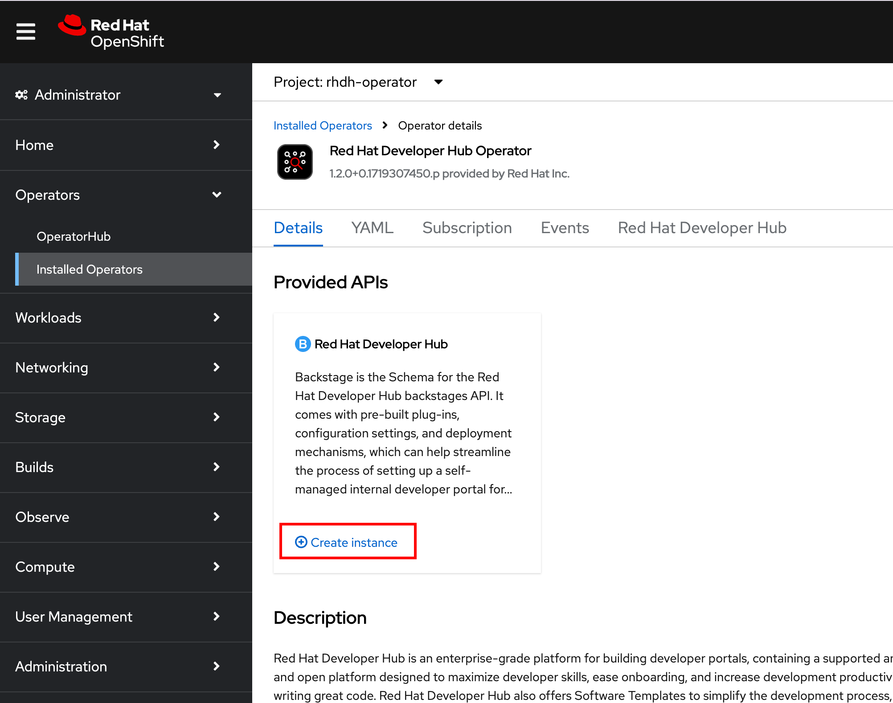
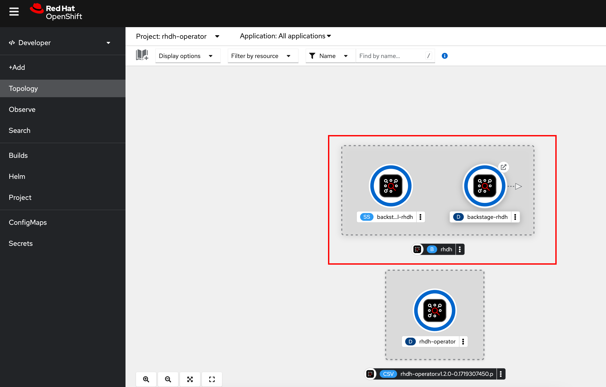
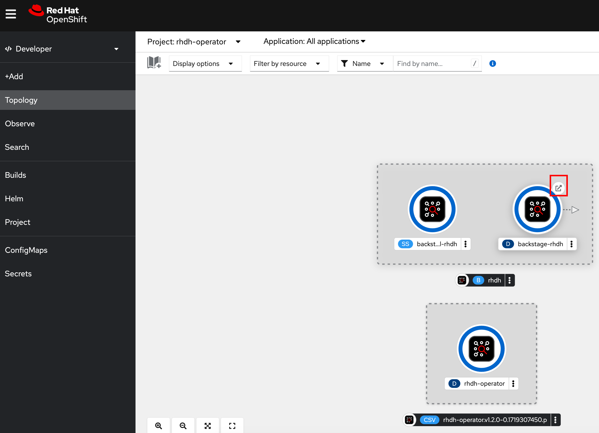

Red Hat Developer Hub Installation using OperatorHub
Red Hat provides a fully supported operator for RHDH in the OpenShift OperatorHub, which provides a convienient, easy to use web based user interface for installing RHDH.
Installation Using the RHDH Operator
RHDH can be installed from within the OpenShift web console just like any other operator from OperatorHub.
Refer to the instructions here to install the RHDH operator on OpenShift.
Lab: Installation using RHDH Operator
Pre-requisites
-
Order the OpenShift Single Node Cluster catalog item from Red Hat Demo Platform (RHDP). It should take an hour approximately for the classroom to be fully provisioned. You will receive an email with the details on how to access the OpenShift cluster. Verify that you can log in to the OpenShift web console as a cluster administrator.
-
Download the OpenShift client
ocfor your platform from from the OpenShift web console by clicking the "?" icon on the top right navigation bar. Uncompress the archive file, and then copy theocbinary for your platform to the system path (usually /usr/local/bin on UNIX systems).
Create a Project for RHDH
-
Log in to your OpenShift web console as the cluster administrator user (usually username is
admin). The username and password details for your OpenShift cluster are accessible in the RHDPServicesdashboard. You should have also received an email with the details of your OpenShift cluster. Figure 1. RHDP OpenShift Cluster Details
Figure 1. RHDP OpenShift Cluster Details
Install the RHDH Operator
-
Click
Operators > OperatorHubin the left side navigation bar of theAdministratorperspective in the OpenShift web console. -
Search for
"developer hub"in the search field on this page, and then select theRed Hat Developer Huboperator.Figure 2. Search for RHDH Operator -
In the
Red Hat Developer Huboperator details page, clickInstall. In theInstall Operatorpage, select the default values for all fields and clickInstallto begin the installation. -
Wait for 5-10 minutes while the operator is installed. You should see
Installed operator: ready for usemessage when the operator is successfully installed.Figure 3. RHDH Operator Installed -
Click
View Operator, and then clickCreate instanceto create a new RHDH instance.Figure 4. RHDH Create new Instance -
In the
Create Backstagepage, change theNameto rhdh, leave all other fields at default values, and then clickCreateto deploy a new RHDH instance. -
Switch to the
Developerperspective in the OpenShift web console, and select therhdh-operatorproject. Verify that a new instance calledrhdhis seen with two pods in running state.Figure 5. RHDH instance running -
Click the
Open URLlink to access Red Hat Developer Hub.Figure 6. RHDH Open URL -
You should now see the Red Hat Developer Hub log in page.
 Figure 7. RHDH Log in Page
Figure 7. RHDH Log in Page -
Click
Enterin theGuestcard to log in as a guest user. You will a warning message pop up with the textFailed to sign in as a guest using the auth backend. Do you want to fallback to the legacy guest token?. ClickYesto log in as a guest user. You will configure RHDH to authenticate against GitHub and other identity providers in later chapters of this course. Figure 8. Log in as a guest user
Figure 8. Log in as a guest userYou have now successfully installed Red Hat Developer Hub on your OpenShift cluster using the RHDH operator.
RHDH PostgreSQL Database
|
The default installation of RHDH (for both Helm Charts and Operator based installs) deploys a single PostgreSQL 15 database pod. This is a potential single point of failure and could prevent RHDH from being highly available. You should follow the installation instructions and install the default single instance PostgreSQL to complete the install. You can then configure the RHDH container to integrate with an external PostgreSQL database instance using the instructions provided in the product documentation at Configuring an external PostgreSQL instance using the Helm Chart. |